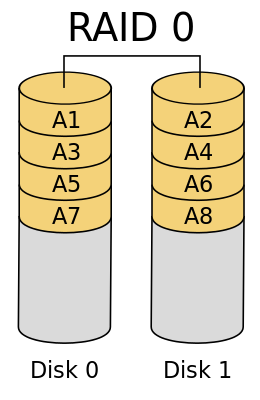
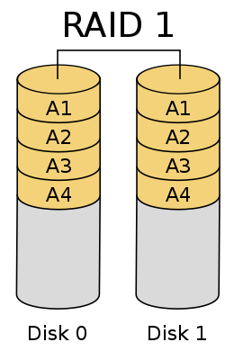
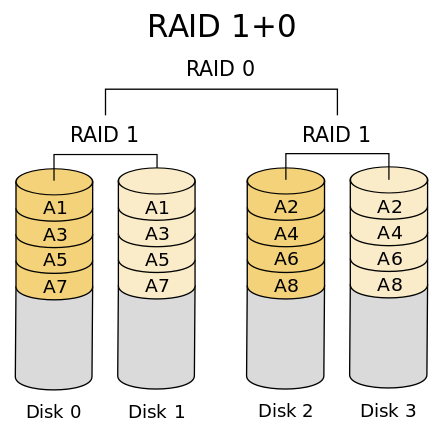
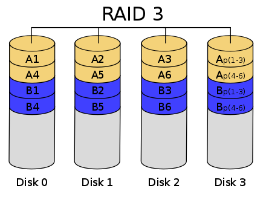
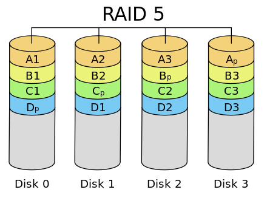
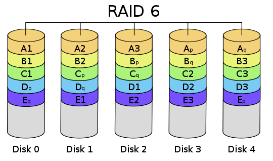

RAID
开始前先来思考一个问题，如果一个文件的大小超过了一块磁盘的大小，该如何存储？
独立硬盘冗余阵列（RAID, Redundant Array of Independent Disks），简称磁盘阵列，利用虚拟化存储技术把多个磁盘组合起来，成为一个或多个磁盘阵列组，目的为提升性能或数据冗余，或是两者同时提升。
简单来说，RAID 把多个磁盘组合成为一个逻辑磁盘，因此，操作系统只会把它当作一个实体磁盘。
常见 RAID 等级
RAID 0

假设服务器有 N 块磁盘，RAID 0 是数据在从内存缓冲区写入磁盘时，根据磁盘数量将数据分成 N 份，这些数据同时并发写入 N 块磁盘，使得数据整体写入速度是一块磁盘的 N 倍；读取的时候也一样，所以在所有的级别中，RAID 0 的速度是最快的
但是 RAID 0 不做数据备份，N 块磁盘中只要有一块损坏，数据完整性就被破坏，其他磁盘的数据也都无法使用了。
RAID 1

RAID 1 是数据在写入磁盘时，将一份数据同时写入两块磁盘，这样任何一块磁盘损坏都不会导致数据丢失，插入一块新磁盘就可以通过复制数据的方式自动修复，具有极高的可靠性，RAID 1 的数据安全性在所有的 RAID 级别上来说是最好的。但无论用多少磁盘做 RAID 1，仅算一个磁盘的容量，是所有 RAID 中磁盘利用率最低的一个级别。
RAID 1 在一些多线程操作系统中能有很好的读取速度，理论上读取速度等于磁盘数量的倍数，与 RAID 0 相同。写入速度有微小的降低。
RAID 10

结合 RAID 0 和 RAID 1 两种方案构成了 RAID 10，它是将所有磁盘 N 平均分成两份，数据同时在两份磁盘写入，相当于 RAID 1；但是平分成两份，在每一份磁盘（也就是 N/2 块磁盘）里面，利用 RAID 0 技术并发读写，这样既提高可靠性又改善性能。不过 RAID 10 的磁盘利用率较低，有一半的磁盘用来写备份数据。
RAID 3

RAID 3 可以在数据写入磁盘的时候，将数据分成 N-1 份，并发写入 N-1 块磁盘，并在第 N 块磁盘记录校验数据，这样任何一块磁盘损坏（包括校验数据磁盘），都可以利用其他 N-1 块磁盘的数据修复。
由于数据内的比特分散在不同的磁盘上，因此就算要读取一小段数据资料都可能需要所有的磁盘进行工作，所以这种规格比较适于读取大量数据时使用。
在数据修改较多的场景中，任何磁盘数据的修改，都会导致第 N 块磁盘重写校验数据。频繁写入的后果是第 N 块磁盘比其他磁盘更容易损坏，需要频繁更换，所以 RAID 3 很少在实践中使用。
RAID 5

相比 RAID 3，RAID 5 是使用更多的方案。RAID 5 和 RAID 3 很相似，但是校验数据不是写入第 N 块磁盘，而是螺旋式地写入所有磁盘中。这样校验数据的修改也被平均到所有磁盘上，避免 RAID 3 频繁写坏一块磁盘的情况。
RAID 5 至少需要三块磁盘，RAID 5 不是对存储的数据进行备份，而是把数据和相对应的奇偶校验信息存储到组成 RAID 5 的各个磁盘上，并且奇偶校验信息和相对应的数据分别存储于不同的磁盘上。当 RAID 5 的一个磁盘数据发生损坏后，可以利用剩下的数据和相应的奇偶校验信息去恢复被损坏的数据。RAID 5 可以理解为是 RAID 0 和 RAID 1 的折衷方案。
RAID 6

如果数据需要很高的可靠性，在出现同时损坏两块磁盘的情况下（或者运维管理水平比较落后，坏了一块磁盘但是迟迟没有更换，导致又坏了一块磁盘），仍然需要修复数据，这时候可以使用 RAID 6。
与 RAID 5 相比 RAID 6 增加第二个独立的奇偶校验信息块。两个独立的奇偶系统使用不同的算法，数据的可靠性非常高，任意两块磁盘同时失效时不会影响数据完整性。
各种 RAID 技术比较
| RAID类型 | 访问速度 | 数据可靠性 | 磁盘利用率 | 目的 |
|---|---|---|---|---|
| RAID 0 | 很快 | 很低 | 100% | 追求最大容量、速度 |
| RAID 1 | 很慢 | 很高 | 50% | 追求最大安全性 |
| RAID 10 | 中等 | 很高 | 50% | 总和 RAID 0/1 优点，理论速度较快 |
| RAID 5 | 较快 | 很高 | (N-1)/N | 追求最大容量、最小预算 |
| RAID 6 | 较快 | 较 RAID 5 高 | (N-2)/N | 同 RAID 5，但更安全 |
HDFS
RAID 可以看作是一种垂直伸缩，一台计算机集成更多的磁盘实现数据更大规模、更安全可靠的存储以及更快的访问速度。而 HDFS 则是水平伸缩，通过添加更多的服务器实现数据更大、更快、更安全存储与访问。
Hadoop 分布式文件系统 HDFS 的设计目标是管理数以千计的服务器、数以万计的磁盘，将这么大规模的服务器计算资源当作一个单一的存储系统进行管理，对应用程序提供数以 PB 计的存储容量，让应用程序像使用普通文件系统一样存储大规模的文件数据。
为什么不推荐为 HDFS 配置 RAID？
HDFS 已经为同一个文件保留了多个副本，如果磁盘发生故障 HDFS 可以将其恢复。HDFS 同样可以一次从多个节点（DataNode）读取数据，如果使用 RAID 1，将浪费更多的存储空间，如果使用 RAID 0，产生失败的可能性会提升 N 倍（N = 磁盘数量）。使用 RAID 5/6 的话，读写速度将受到影响，也更昂贵。
不过由于 NameNode 在 HDFS 中容易出现单点故障，因此需要更可靠的硬件配置，所以建议在 NameNode 上使用 RAID。
其他说明
在一些 Master 处理节点上，如：Hive 的 MetaStore，也推荐使用 RAID。同时建议为所有的系统盘配置 RAID，你不会希望仅仅因为系统盘故障而导致节点故障。
对于 ElasticSearch，其本身也提供了很好的 HA 机制，同样无需使用 RAID。
最后
回到开头的那个问题，我的回答是：
- 单机时代：
RAID - 分布式时代：分布式文件系统